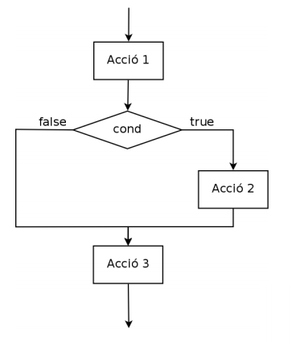
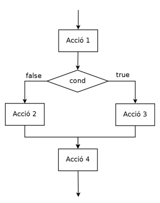

Estructura de selecció
Estructura condicional
L’estructura de control condicional o alternativa permet prendre una decisió en un moment determinat sobre quines instruccions s’han d’executar. Donada una expressió booleana (una expressió lògica que s’avalua a veritat “true” o fals “false”) permet decidir entre un o varis camins d’execució.
Existeixen diferents tipus d’estructura condicional.
- Estructura simple (if)
- Estructura composta (if/else)
- Estructura encadenada (if/else if/else)
- Sentència switch (switch)
- Combinació d’estructures
1. Estructura simple (if)
Aquesta és la forma bàsica. Consisteix en una estructura en la qual si l' avaluació lògica és certa s’executen una sèrie d’instruccions, en cas contrari s’ometen aquestes instruccions. Consideracions:
- L’expressió lògica ha d’anar precedida de la paraula if i entre parèntesi ().
- Les instruccions que s’han d’executar es situen a continuació dins de les claus {}.
- Només s’executarà el bloc d’instruccions contingut entre {} quan l’expressió booleana s’avaluï a cert.
| Codi | Diagrama de flux |
|---|---|
| Acció1; if ( cond ) { Acció2; } Acció3; |
 |
2. Estructura composta (if/else)
La diferència respecte el cas anterior és que ara quan l’expressió booleana s’avaluï a fals també s’executarà un bloc d’instruccions.
- Aquestes instruccions aniran contingudes dins de parèntesis {} i precedides de la paraula else.
| Codi | Diagrama de flux |
|---|---|
| Acció1; if ( cond ) { Acció2; } else { Acció3; } Acció4; |
 |
3. Estructura encadenada o múltiple (if/else if/ else)
A vegades es dóna la situació que no volem decidir només entre dos camins d’execució, sinó que el problema ens requereix escollir entre diferents camins, així serà necessari introduir la figura del else if(). Comportament:
- En aquest cas el programa avalua la primera expressió booleana que es troba, si és certa executa el bloc d’instruccions que hi pertany. Però si l’avaluació és falsa anirà a la següent expressió booleana que es trobarà en un bloc else if(). I així consecutivament fins a la última.
- S’ha de tenir en compte que és important la prioritat en l’avaluació de les diferents expressions booleanes. Si s’avalua a cert en alguna expressió booleana JA NO avalua els següents casos, entra dins el bloc d’instruccions, s’executen les instruccions pertinents, i surt de l’estructura de control sense avaluar la resta de casos (podrien avaluar-se també a cert, per això és important la prioritat alhora d’establir els casos).
- Si s’introdueix un bloc else i cap expressió booleana s’avalua a cert, s’executarà el bloc d’instruccions corresponents a l’else.
| Codi | Diagrama de flux |
|---|---|
| Acció0; if ( cond1 ) { Acció1; } else if (cond2) { Acció2; }else if (cond3) { Acció3; }else if (cond4) { Acció4; }else { Acció5; } Acció6; |
 |
4. Sentència switch (switch)
Aquesta estructura és útil quan en funció del valor d’una variable es poden executar camins d’instruccions diferents. Per exemple podríem pensar en un menú d’una app on tenim diferents opcions o un comandament a distància de la tele. Consideracions:
- En aquest cas s’avalua a == EL VALOR de la variable en qüestió i definirem les instruccions pertinents en cada cas.
- A l’inici d’aquesta estructura comença amb un switch seguida de la variable que volem avaluar entre parèntesi: switch (variable).
- Tot seguit, i entre claus {}, definim tots els casos que es volen tractar d’aquesta variable. Per a cada cas existeix un bloc case valor: amb tots els casos possibles.
- Si volem executar un bloc d’instruccions en cas que no es trobi cap dels valors desitjats per la variable sempre tenim el bloc default: que ens permet fer la mateixa funció que “l’else” en les estructures anteriors.
- En cada bloc case és necessari acabar-lo amb un break; necessari per a que ens surti de l’estructura switch.
- És una estructura que podríem simular amb una estructura encadenada o múltiple, la única diferència respecte a l’anterior és que en aquest cas, si no posem el break, sí que permetria executar més d’un case diferent.
| Codi | Diagrama de flux |
|---|---|
| Acció0; switch ( expressio ) { case valor1: Acció1; break; case valor2: Acció2; break; case valor3: Acció3; break; case valor4: Acció4; break; default: Acció5; } Acció6; |
 |
5. Combinació d’estructures
Moltes vegades els problemes que ens trobem a la vida real requereix de la composició de diferents estructures de control, així doncs es podria donar el cas que tinguéssim diferents estructures de control unes dins d’altres de forma jerarquitzada.
Exemple: En l’època actual de Coronavirus, donat els cribatges de PCRs per detectar casos positius ens interessaria detectar quins són els assimptomàtics. Així doncs m’invento un algorisme que permeti filtrar aquelles persones que ens interessa per realitzar les proves. És necessari que donades unes quantes dades ens digui si cal que faci alguna de les proves o no.
- Volem analitzar les persones entre 18 i 40 anys, d’aquestes es farà la prova bàsica de PCR, però les noies embarassades no realitzaran aquesta bàsica sinó que faran una prova més avançada. Pel que fa a les persones majors de 40 anys els hi realitzarem una prova avançada de PCR i un test d’esforç físic.
Exemples
- Crea un programa on es mostri el resultat de sumar dos nombres sempre que la suma de tots dos sigui inferior o igual a 15. (exemple estructura simple)
int num1 = sc.nextInt();
int num2 = sc.nextInt();
int suma = num1 + num2;
if( suma <= 15) {
System.out.println(num1+num2);
}
- Crea un programa que permeti a dir, donats dos nombres per l’usuari, si són múltiples l’un a l’altre. (exemple estructura composta)
System.out.println("Entra el 1r nombre");
int num1 = sc.nextInt();
System.out.println("Entra el 2n nombre");
int num2 = sc.nextInt();
if(num1%num2 == 0 || num2%num1 == 0){
System.out.println("Són divisors");
} else {
System.out.println("No són divisors");
}
- Creeu un programa que permeti introduir dos nombres i realitzar una operació sobre la base de l’nombre de codi, 1, 2 o 3 permeti restar, multiplicar o dividir els dos nombres i mostrar el resultat per pantalla.
System.out.println("Introdueix el primer operand");
int num1 = sc.nextInt();
System.out.println("Introdueix el segon operand");
int num2 = sc.nextInt();
System.out.println("Introdueix el codi: 1.restar, 2.multiplicar, 3.dividir");
int opcio = sc.nextInt();
if(opcio==1)System.out.println(num1 - num2);
else if(opcio == 2) System.out.println(num1 * num2);
else if(opcio == 3) System.out.println(num1 / num2);
else System.out.println("Opcio no correcta.");
System.out.println("Introdueix el primer operand");
int operand1 = sc.nextInt();
System.out.println("Introdueix el segon operand");
int operand2 = sc.nextInt();
System.out.println("Introdueix el codi: 1.restar, 2.multiplicar, 3.dividir");
int codi = sc.nextInt();
int resultat=0;
if(codi==1) {
resultat = operand1 - operand2;
}else if(codi==2){
resultat = operand1 * operand2;
}else if(codi==3){
resultat = operand1 / operand2;
}else{
System.out.println("Codi erroni");
}
if(codi == 1 || codi == 2 || codi == 3)
System.out.println("El resultat de l'operacio és: "+ resultat);
- El mateix exemple anterior però ara amb un switch.
System.out.println("Introdueix el primer operand");
int operand1 = sc.nextInt();
System.out.println("Introdueix el segon operand");
int operand2 = sc.nextInt();
System.out.println("Introdueix el codi: 1.restar, 2.multiplicar, 3.dividir");
int codi = sc.nextInt();
int resultat=0;
switch(codi) {
case 1:
resultat = operand1 - operand2;
break;
case 2:
resultat = operand1 * operand2;
break;
case 3:
resultat = operand1 / operand2;
break;
default:
System.out.println("Codi erroni");
}
if(codi == 1 || codi == 2 || codi == 3)
System.out.println("El resultat de l'operacio és: "+ resultat);
switch(codi) {
case 1:
case 2:
case 3:
System.out.println("El resultat de l'operacio és: " + resultat);
}
- Crea un programa que donats 4 números indiqui si els números són iguals i quin d’ells és el menor i major nombre de tots ells. El programa a més haurà de mostrar per pantalla el resultat de restar el major pel menor d’ells i el resultat de multiplicar els altres dos.
int num1 = sc.nextInt();
int num2 = sc.nextInt();
int num3 = sc.nextInt();
int num4 = sc.nextInt();
int max = num1;
int min = num1;
int mult;
/**
*
* Són iguals??
*/
if(num1 == num2 && num1 == num3 && num1 == num4) System.out.println("Són iguals");
else System.out.println("No són iguals");
/**
* PROBLEMA DEL MAJOR MENOR 5 OPCIONS
*
*/
//OPCIO 1 força bruta
if(num2>num1 && num2>num3 && num2>num4)max = num2;
else if(num3>num1 && num3>num2 && num3>num4) max = num3;
else if(num4>num1 && num4>num2 && num4>num3) max = num4;
if(num2<num1 && num2<num3 && num2<num4)min = num2;
else if(num3<num1 && num3<num2 && num3<num4) min = num3;
else if(num4<num1 && num4<num2 && num4<num3) min = num4;
//OPCIO 2 comparem el max amb tots i el min amb tots individualment
max = num1;
if(num2>max) max = num2;
if(num3>max) max = num3;
if(num4>max) max = num4;
min = num1;
if(num2<min) min = num2;
if(num3<min) min = num3;
if(num4<min) min = num4;
//OPCIO 3 a Semifinals comparant!
int max1,max2, min1,min2;
if(num1> num2)max1 = num1;
else max1 = num2;
if(num3 > num4) max2 = num3;
else max2=num4;
if(max1 > max2) max = max1;
else max=max2;
if(num1 < num2)min1 = num1;
else min1 = num2;
if(num3 < num4) min2 = num3;
else min2=num4;
if(min1 > min2) min = min1;
else min=min2;
//OPCIO 4 semifinals math.max math.min
max1 = Math.max(num1,num2);
max2 = Math.max(num3,num4);
max = Math.max(max1,max2);
min1 = Math.min(num1,num2);
min2 = Math.min(num3,num4);
min = Math.min(min1,min2);
//OPCIO 5 math.max i math.min
max = Math.max (Math.max(num1,num2), Math.max(num3,num4));
min = Math.min (Math.min(num1,num2), Math.min(num3,num4));
System.out.println(max-min);
//Segona part de l'activitat on es realitza la multiplicacio amb els que no són major i menor
if( (max==num1 && min==num2) || (max==num2 && min==num1))mult=num3 * num4;
else if( (max==num1 && min==num3) || (max==num3 && min==num1))mult=num2 * num4;
else if( (max==num1 && min==num4) || (max==num4 && min==num1))mult=num2 * num3;
else if( (max==num2 && min==num3) || (max==num3 && min==num2))mult=num1 * num4;
else if( (max==num2 && min==num4) || (max==num4 && min==num2))mult=num1 * num3;
else if( (max==num3 && min==num4) || (max==num4 && min==num3))mult=num1 * num2;
//Solució utilitzant Math.mix i Math.max per extreure valors que no siguin ni màxim ni mínim.
int min3 = Math.min (Math.max(num1,num2), Math.max(num3,num4));
int max3 = Math.max (Math.min(num1,num2), Math.min(num3,num4));
int mult2 = min3 * max3;